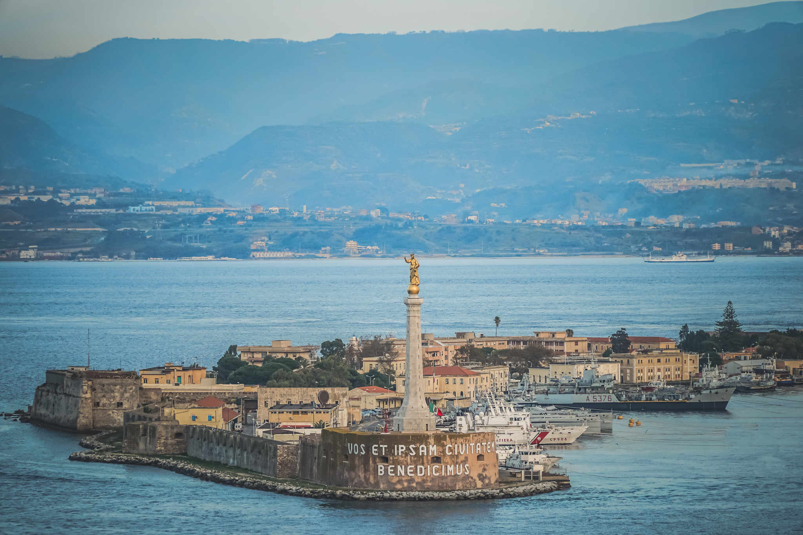
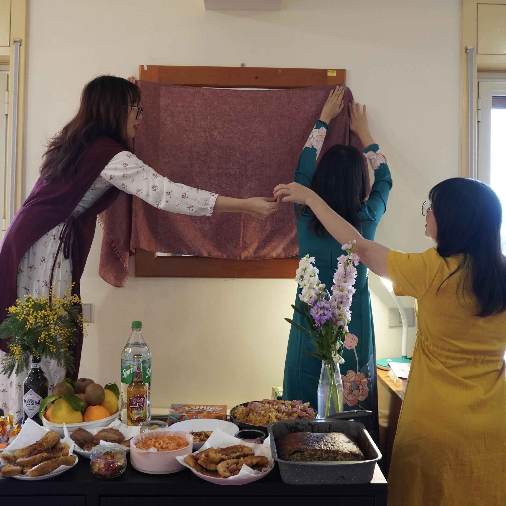

class: center, middle, inverse # 🇻🇳 VSAM ## Vietnamese Student Association in Messina ### Technical Project Presentation --- ## 🎯 Project Overview **VSAM** is a student-led platform designed to support the Vietnamese community in Messina, Sicily. The portal provides essential information on: - **Bureaucracy** (Permesso di Soggiorno, ISEE) - **Academic Life** at UniME - **Cultural Exchange** and Community Events .center[] --- ## 👥 Target Audience - **Prospective Students:** Candidates in Vietnam researching the University of Messina. - **Newcomers:** Vietnamese and international students who just arrived and need help with Italian paperwork. - **The Community:** Current residents looking for events and gathering moments. .center[] --- ## 📂 Web Structure The project follows a modular and semantic architecture: - **Frontend Organization:** - `index.html`: The main landing page with semantic sections. - `style.css`: Custom styles including gradients and responsive queries. - `scripts.js`: Logic for dynamic modals and interactive elements. - **Asset Management:** - `/pic`: Dedicated folder for optimized images. - **Content Hierarchy:** - **Top-down flow:** Awareness (Hero) → Knowledge (Guides) → Engagement (Gallery, Stories, FAQ) → Conversion (Contact). --- ## 🛠️ Technology Stack Following the exam requirements, the project is built with: - **Bootstrap 5:** For a modern, responsive grid and components (Carousel, Modal, Accordion). - **Custom CSS3:** Implementing the site's unique identity (Gradients, Glassmorphism). - **Vanilla JavaScript:** Handling dynamic content for Modals and Form validation. - **Responsive Ecosystem:** Optimized for all devices using a Mobile-First approach. - **Typography & Design Identity:** Using `Instrument Serif` for elegant headings and `Inter` for high-readability body text. - **W3C Standards:** Validated code ensuring high quality and clean files. --- ## 📱 Key Technical Features - **Responsive Layout:** Mobile-first approach using Bootstrap's Grid system. - **Interactive Information Hub:** Dynamic modals for complex bureaucratic guides (Permesso/ISEE). - **Optimized Gallery:** A high-performance carousel showcasing community activities with `object-fit` optimization. --- ## 🎯 Strategic Touchpoints & Conversion The website is not just a static guide; it is a **Support Funnel** designed to lead users to our community: * **Integrated CTAs in Popups:** Every technical guide (Permesso, ISEE) contains a strategic "Contact VSAM" button. * **The Support Journey:** 1. **Trigger:** User opens a Modal to find complex bureaucracy info. 2. **Touching Point:** Within the guide, a clear Call-to-Action (CTA) is "planted". 3. **Conversion:** User clicks to visit our **Facebook Fanpage** or use the **Contact Form**. * **Objective Achieved:** Turning a passive reader into an active community member, ensuring long-term support. --- ## ✅ Key Successes (What I did well) The project successfully delivers a professional and high-quality user experience through: * **Clear and organized layout:** Well arranged the sections—from introductions and guides to contacts—in a logical way, making it easy for users to find exactly what they need instantly. * **Modern and consistent design:** I used a specific color palette (purple gradients) and carefully chosen fonts to make the website looks professional, modern, and cohesive. * **Works perfectly on all devices:** The website is fully responsive, meaning it automatically adjusts to look great and run smoothly whether someone is using a phone or a computer. --- ## 💡 Challenges - **JavaScript Integration:** It was challenging to learn and write JavaScript from scratch to ensure that the logic worked perfectly with my HTML structure and CSS styles. - **Content & User Engagement:** It was difficult to create content that is both informative and engaging, while strategically placing "touch points" to encourage users to contact us. - **Responsive Consistency:** Ensuring the website stays fully functional and looks professional across many different screen sizes and devices required a lot of testing and adjustments. --- ## 🧐 Lessons Learnt - **Bootstrap 5 Transition:** Learned to handle components (Modals/Carousels) using **Vanilla JS** instead of the old jQuery-dependent methods. - **User Psychology:** Understood how to place **Strategic Touchpoints** inside information-heavy popups to convert readers into community members. - **Structure Matters:** Gained experience in organizing complex CSS files using custom variables and semantic naming conventions. --- ## 📈 Long-term Vision I plan to follow a modular development path: - **Multilingual Support:** Adding Italian and Vietnamese versions for better integration. (helpful for Italian students who comes from other cities/town and Vietnamese parents who are researching studying abroad in Messina) - **Backend Integration:** Implementing a database for student registration and forum discussions. - **Blog Section:** A space for community members to share personal survival tips in Sicily. --- class: center, middle, inverse # Thank you for your time!